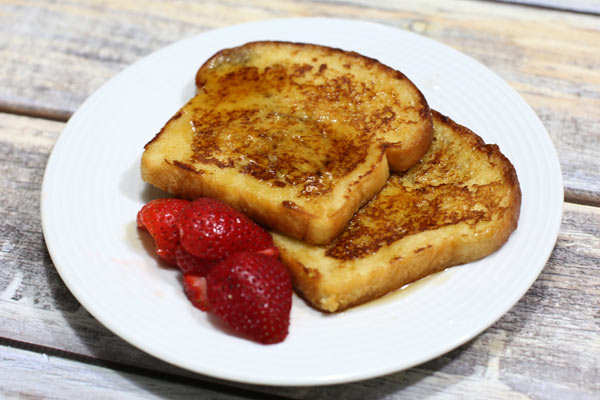

Cinnamon-Accented French Toast

Description
Very quick, easy, and tasty french toast.
My pappy used to make me this french toast before school when I was a wee little boy.
Ingredients
- 3 eggs, beaten
- 2 tsp white sugar
- 1 tsp milk
- 1 tsp ground cinnamon
- 1/4 tsp salt
- 6 slices bread
Steps
- Mix beaten eggs, sugar, milk, cinnamon, and salt in a large, shallow bowl. Dip bread slices into egg mixture to coat.
- Heat a skillet over medium heat. Cook bread in hot skillet until browned completely, 2 to 3 minutes per side.